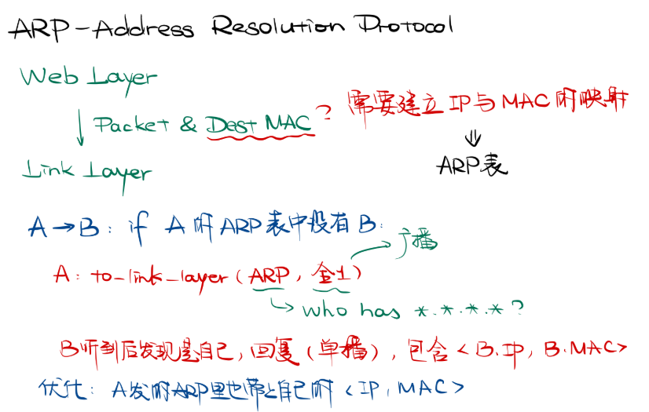
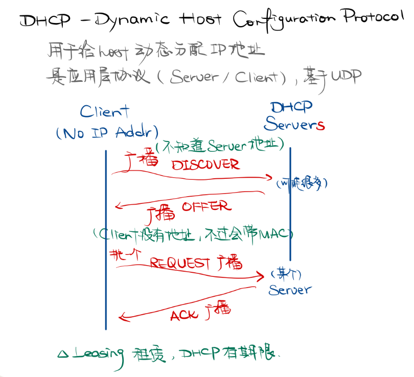

网络层 Network Layer
主要任务
链路层完成的是在一个网络中如何将帧从一个结点传输给另一个结点；或者说是从线路的一边传递到另一边。而网络层则考虑如何将数据包从发送方一路送到接收方[host to host]。在这个过程中，数据包可能会跨越不同的网络（这也是 inter-net 的名字来源）。
- 使用一些中间设备（或称中间系统、中继系统）可以将两个计算机网络连接起来。
- 我们之前学到的物理层的中继器 (Repeater)、集线器 (Hub)，以及链路层的网桥 (Bridge)、交换机 (Switch) 都属于中间设备。
- 我们之前也提到，虽然网桥最初设计被用来处理异构网络之间的互联，但最终这部分任务被留给了网络层；即，我们认为上述设备只是扩大了网络，并没有连接不同的网络。
- 因此我们引入网路层的中间设备：路由器 (Router)
- 它负责连接不同的网络，为到来的跨网络的数据包根据其目的地找到一条路径，并对应地将其转发。
- 在更高层还有网关 (Gateway) 这一中间设备。由于一些历史原因，路由器有时也被称为网关。
我们说，网络层是处理端到端数据传输的最底层。这是因为，链路层考虑的只是将数据从网络上的一个结点发给另一个结点，而我们实际上需要做的是将一个进程的数据传递给另一个进程。如下图所示，发送方 H1 上的进程 P1 将信息传递给 ISP（网络应用提供商）提供的设备 A，ISP 的路由器为数据包找到一条通路并转发给接收方的路由器 F，最终由接收方 H2 的进程 P2 接受。网络层首先完成了从主机到主机的数据传输。
具体的过程是， A host with a packet to send transmits it to the nearest router, either on its own LAN or over a point-to-point link to the ISP. The packet is stored there until it has fully arrived and the link has finished its processing by verifying the checksum. Then it is forwarded to the next router along the path until it reaches the destination host. This mechanism is store-and-forward packet switching.
除了将异构网络互联、通过路由和转发实现任意网络结点间的数据传输以外，网络层还关注拥塞控制 (congestion control) 和服务质量 (quality of service) 等话题。
提供给传输层的服务
正如在数据链路层中讨论的那样，我们在网络层也需要考虑提供面向连接的还是无连接的服务。
- 以 Internet community 为代表的一方认为，无论如何设计网路，本质上它就是不可靠的，因此网络服务应该是无连接的。
- 以电话公司为代表的另一方认为，网络应该提供可靠的面向连接的服务。
实际上，无连接服务获得了成功。但是 Internet 也渐渐朝着面向连接的特性进化，因为服务质量变得越来越重要了。与此相关的两个面向连接技术的例子是 MPLS 和 VLAN。我们在链路层已经讨论过了 VLAN，在网络层中我们会讨论 MPLS。
但无论如何，提供给传输层的服务应当屏蔽不同的路由器技术，以及网络上的路由器数量、类型和拓扑关系。传输层可用的网络地址也应当有一套可以跨越 LAN 甚至 WAN 的统一编址方案。
无连接服务的实现：数据报网络 datagram network
- 我们在物理层讨论了三种不同的交换方式，包交换 packet switching 是其中一种。在这里，我们进一步考察包交换的实现方式。我们将每个数据包独立注入网络中，并且为每个数据包独立路由（即，为每个数据包分别进行一次寻路）。在这种方式中，我们称数据包为 数据报 datagram，这种网络称为 数据报网络 datagram network。
- 这种方式中，每个数据报的首部需要保存其目的地址；每个路由器根据该地址进行寻路。

面向连接服务的实现：虚电路网络 virtual-circuit network
- 虚电路网络也是包交换的一种实现方式。虚电路不希望给每个数据包选择一条路径，而希望建立一个连接，选择一条固定的路径；所有需要从这个连接上通过的流量都使用这条路径。
- 虚电路之所以是“虚”的，是因为这条电路不是专用的，只是逻辑上的。一条链路上可能有多个虚电路通过，一对 host 之间也可能存在多条不同的虚电路。
- 如下图所示，每个连接有一个连接标识符 connection identifier；路由器 A 的表中的第一行表示：如果有一个来自 H1 的、标识符为 1 的包，那么 A 将其转发给 C，且标识符为 1。这种方式中，每个数据报不需要保存目的地址，而是保存 connection identifier。

MPLS (MultiProtocol Label Switching)

数据报网络和虚电路网络的比较

- One trade-off is setup time versus address parsing time. Using virtual circuits requires a setup phase, which takes time and consumes resources. However, once this price is paid, figuring out what to do with a data packet in a virtual-circuit network is easy: the router just uses the circuit number to index into a table to find out where the packet goes. In a datagram network, no setup is needed but a more complicated lookup procedure is required to locate the entry for the destination.
- A related issue is that the destination addresses used in datagram networks are longer than circuit numbers used in virtual-circuit networks because they have a global meaning. If the packets tend to be fairly short, including a full destination address in every packet may represent a significant amount of overhead, and hence a waste of bandwidth.
- Virtual circuits have some advantages in guaranteeing quality of service and avoiding congestion within the network because resources (e.g., buffers, bandwidth, and CPU cycles) can be reserved in advance, when the connection is established. Once the packets start arriving, the necessary bandwidth and router capacity will be there. With a datagram network, congestion avoidance is more difficult.
- 事务处理系统适合数据报，长期的流量连接适合虚电路（手工建立，持续使用）。
- Virtual circuits also have a vulnerability（脆弱性） problem. If a router crashes and loses its memory, even if it comes back up a second later, all the virtual circuits passing through it will have to be aborted. In contrast, if a datagram router goes down, only those users whose packets were queued in the router at the time need suffer (and probably not even then since the sender is likely to retransmit them shortly). The loss of a communication line is fatal to virtual circuits using it, but can easily be compensated for if datagrams are used.
- Datagrams also allow the routers to balance the traffic throughout the network, since routes can be changed partway through a long sequence of packet transmissions.
路由算法
路由器的功能是 路由 routing 和 转发 forwarding。路由是指根据特定的路由算法构造出路由表，同时不断进行更新维护；而转发是指根据到来的数据包的内容查询路由表并从合适的端口转发出去。
路由算法
-
虚电路网络只在建立一条新的虚电路时才需要做路由决策，因此这种情形也称为 会话路由 session routing。
-
路由算法可以按是否根据当前网络的流量和拓扑结构调整路由决策分为两大类
-
静态路由 static routing / 非适应性算法 nonadaptive algorithm。简便，开销较小，在拓扑变化不大、路由选择非常清楚的场合很有用；但无法响应故障。
-
动态路由 dynamic routing / 适应性算法 adaptive algorithm。能够改善网络性能，有助于流量控制，收到故障的影响较小。但是算法较为复杂，会增加网络负担。另外如果变化太快容易引起震荡，变化过慢会影响路由的一致性。在 where they get their information (e.g., locally, from adjacent routers, or from all routers), when they change the routes (e.g., when the topology changes, or every ΔT seconds as the load changes), and what metric（度量标准）is used for optimization (e.g., distance, number of hops, or estimated transit time) 等方面有多种选择。
-
Sink tree is not necessarily unique

Shortest Path

- Dijkstra’s Algorithm

Flooding

Distance Vector Routing / Bellman-Ford Routing

- The settling of routes to best paths across the network is called convergence (收敛). Although Distance Vector Routing converges to the correct answer, it may do so slowly. In particular, it reacts rapidly to good news, but leisurely to bad news.
- (a) After init, A started; (b) After init, A halted

- At the first packet exchange, B does not hear anything from A. Fortunately, C says “Do not worry; I have a path to A of length 2.” Little does B suspect that C’s path runs through B itself. …However, none of these heuristics work well in practice despite the colorful names. The core of the problem is that when X tells Y that it has a path somewhere, Y has no way of knowing whether it itself is on the path.
- Problems: 1. 发的东西太长了，占带宽； 2. converge 太慢了
Link State Routing
- 基本过程：与邻居交流，了解其网络地址和交流成本；将这些信息构造成数据包，发给其他所有路由器，也接收其他路由器的数据包；根据这些数据包在本地构造出整个网络的拓扑，并用 Dijkstra’s algorithm 算出到每个结点的最短路。

- Use an artificial node N. One designated router on the LAN is selected to play the role of N in the routing protocol


Hierarchical Routing

拥塞控制
服务质量
网络互联
不同协议的路由策略
- 具体如何在异构网络之间转发呢？有下面两种思路：


Packet Fragmentation
- Each network imposes some maximum packet size: MTU, Maximum Transmission Unit. 由于路由，源端很难得知路径上的 MTU。

- 问题：(a) 拆分重组和重复工作、不能分别路由，以及 (b) 判断结尾、额外开销、错误率提升。Nontransparent fragmentation:


Internet Protocol
IPv4
-
Header (20-byte fixed + options) + Body / Payload
-
Header 格式

-
传输顺序。 The bits are transmitted from left to right and top to bottom, with the high-order bit of the Version field going first. (This is a “big-endian” network byte order. On little-endian machines, such as Intel x86 computers, a software conversion is required on both transmission and reception.) In retrospect, little endian would have been a better choice, but at the time IP was designed, no one knew it would come to dominate computing.
-
Version - 4 (0100) for IPv4
-
IHL (Internet Header Length) - 4 bits, 5~15, in 32-bit words. E.g. IHL = 5 表示头部有 5*32 bits = 20 Bytes，即 Option 字段长度为 0。因此 Option 字段最多 40 Bytes
-
Total length - 16 bits, in Byte, Head + Body, ⇐65536
-
Identification - 16 bits, all the fragments of a packet contain the same Identification value.
-
Unused DF (Don’t Fragment) - can be used in path MTU discovery MF (More Fragments) - 0 for the last fragment
-
Fragment offset - All fragments except the last one in a datagram must be a multiple of 8 bytes
-
TTL - 设计为按秒计，现在按 hop 计。When it hits zero, the packet is discarded and a warning packet is sent back to the source host. This feature prevents packets from wandering around forever, something that otherwise might happen if the routing tables ever become corrupted
-

-
Checksum - 之前讨论过的 Internet Checksum，16 bits 划分。注意每一跳后 TTL 都会变所以 the Header checksum is assumed to be zero upon arrival 然后重新算一遍。
-

-
The Options field was designed to provide an escape to allow subsequent versions of the protocol 1) to include information not present in the original design, 2) to permit experimenters to try out new ideas, and to 3) avoid allocating header bits to information that is rarely needed. The options are of variable length. Each begins with a 1-byte code identifying the option. Some options are followed by a 1-byte option length field, and then one or more data bytes. The Options field is padded out to a multiple of 4 bytes.
-

-
IPv4 地址
-
Internet 上的每个 host 和 router 都有 IP 地址。需要注意的是，每个 IP 地址指向的不是一台机器，而是一个 network interface；例如 router 有多个接口，因此每个接口都有一个 IP 地址。
-
IP 地址具有层次性。Each 32-bit address is comprised of a variable-length network portion in the top bits and a host portion in the bottom bits. The network portion has the same value for all hosts on a single network, such as an Ethernet LAN. This means that a network corresponds to a contiguous block of IP address space. This block is called a prefix.Subnet mask. Since the prefix length cannot be inferred from the IP address alone, routing protocols must carry the prefixes to routers. Sometimes prefixes are simply described by their length, as in a “/16” which is pronounced “slash 16”.IP addresses are written in dotted decimal notation.
-

-

-
Classful Addressing
-

-

-
0.0.0.0：As source addr when booting, this host doesn’t know its IP addr and trying to acquire one (DHCP); As dest addr / socket listening: all, including 127...127...: Loopback. Not actually on the link.
-
Subnet
-

-

-
Outside the network, the subnetting is not visible, so allocating a new subnet does not require contacting ICANN or changing any external databases.
-
CIDR, Classless Inter-Domain Routing
-

-

-
NAT
-

-

-

IPv6


Internet Control Protocols
-
In addition to IP, which is used for data transfer, the Internet has several companion control protocols that are used in the network layer.
-
ARP
-

-
DHCP
-

-
ICMP
-

路由协议
互联网路由
- 问题：不同的路由算法、不同的度量方式、对外保护网络内部细节、太大

- Within each network (OR AS, Autonomous System), an intradomain or interior gateway protocol is used for routing. (“Gateway” is an older term for “router”.) Across the networks that make up the internet, an interdomain or exterior gateway protocol is used. The networks may all use different intradomain protocols, but they must use the same interdomain protocol.
RIP, Routing Information Protocol
- 一种 Interior Gateway Protocol，基于 Distance Vector Routing，用 hop 计量距离。规定一条路径最多包含 15 个 router（即 15 个 hop），从而防止环路；可见只适用于小型网络。每 30s 在 相邻 的路由器之间交换一次信息，即自己当前的路由表，以维护路由表。
- 是一个应用层协议，需要借助 UDP，端口号是 520。
OSPF, Open Shortest Path First
- 也是一种 Interior Gateway Protocol，直接使用 IP Packet 发送，protocol 字段值为 89。Open 是指该协议发布在公开文献中。
- 支持根据 IP Packet 的不同 services 使用不同的路由方式，从而更好地传输实时流量。 支持多种距离度量，支持多路径之间的负载平衡，支持层次系统，提供一定安全性，支持隧道。
- 每个 AS 内部也有层次结构：有一个 Backbone Area；其他任意两个区域之间可以通过 Backbone Area 互达。
- 基于 Link State Routing。

BGP, Border Gateway Protocol
- Internet 使用的 Exterior Gateway Protocol。每个 AS 需要选择至少一个 router 作为发言人。基于 Distance Vector Routing；但实际上不一定是最优的，因为考虑优先使用对等网络以及各种限制等实际的政策原因，同时网络太大也不一定能找到最佳。另外还维护到目的地的路径，因此叫 Path Vector Protocol。
- 应用层协议，基于 TCP，端口号 179。
IP 组播
移动 IP
ICMP 的 ROUTER ADVERTISEMENT/SOLICITATION 消息使得主机可以找到附近的路由器。当主机发现路由器不一样的时候，就知道自己跑了。
主机在新的网络 (foreign / remote agent) 通过 DHCP 获得一个新的 IP 地址，然后告诉自己的老家 (home agent) 自己现在在哪。
Home agent 需要拦截发给这个跑路了的主机的包，方法是当路由器通过 ARP 询问跑路主机持有的 IP 对应什么 MAC 地址时，回答自己的 MAC 地址。这就是 ARP agent。为了快速更新，home agent 也可以发 Gratuitous ARP（无故 ARP），问跑路主机的 IP 对应的 MAC 并自己回答。